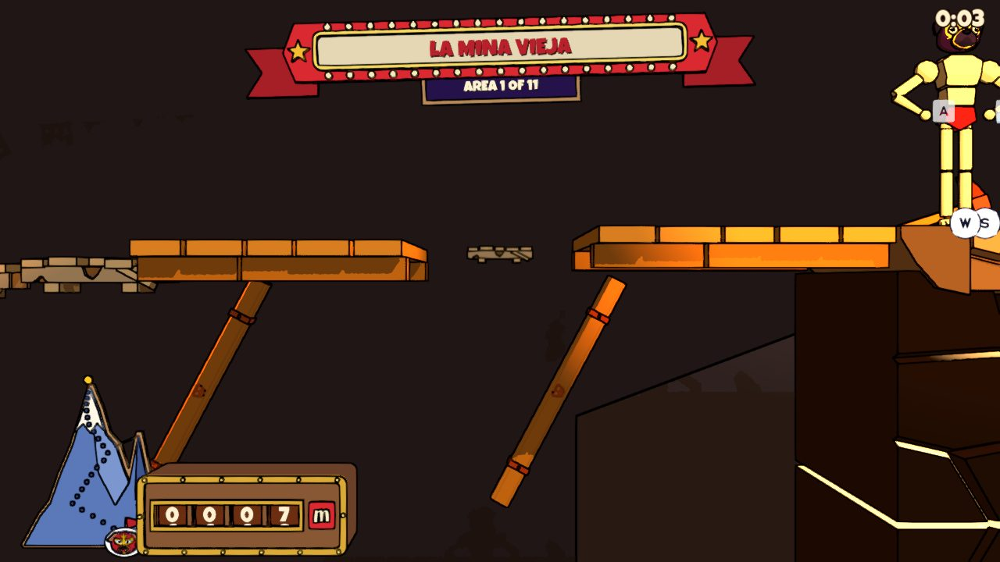
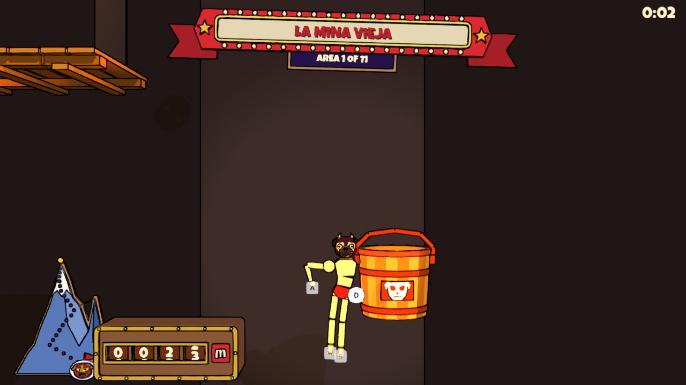
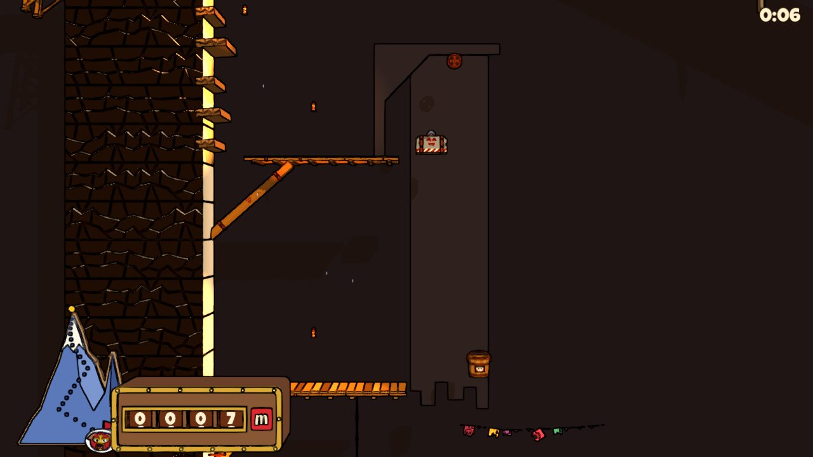
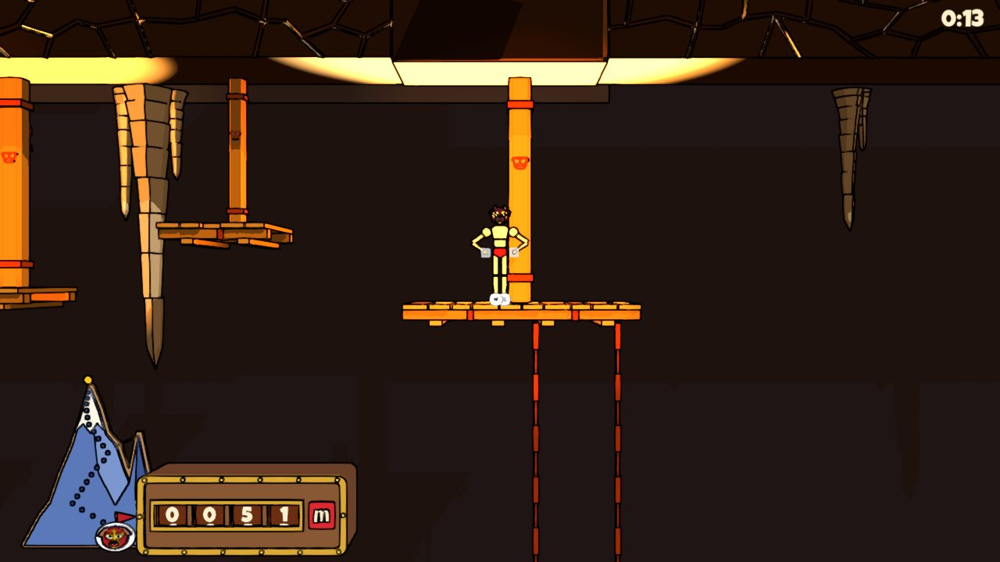
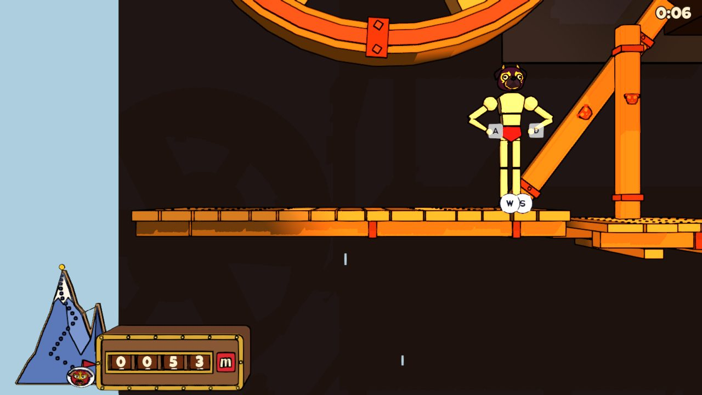
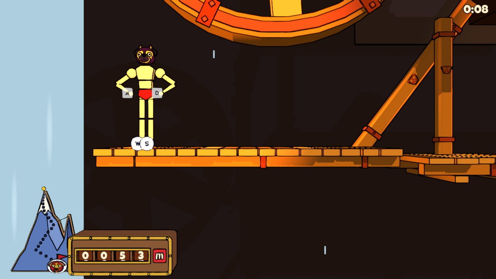
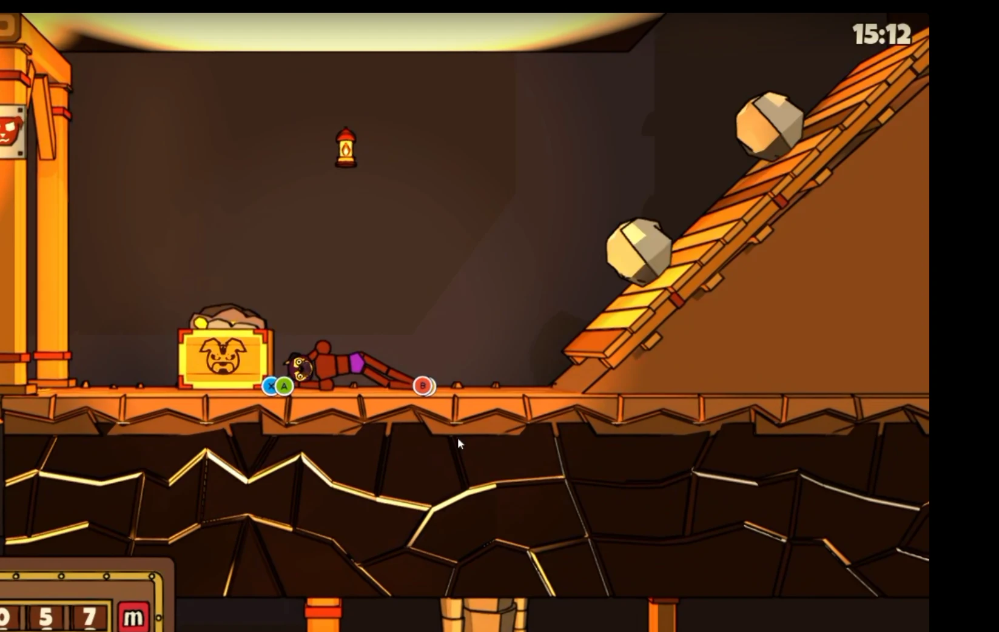
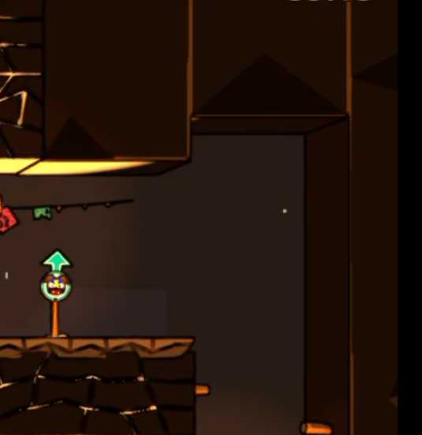
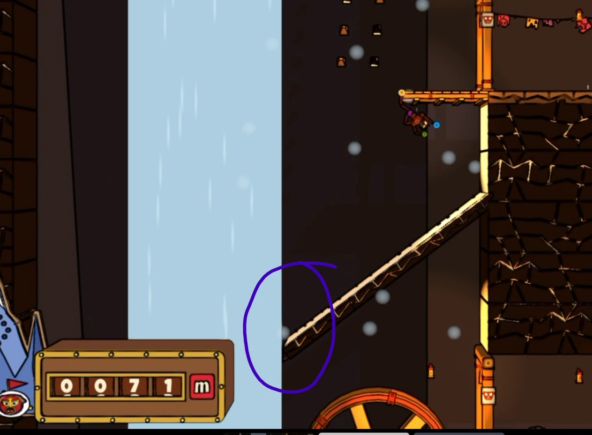

The Peak: playtest notes
Parker and Dan playing the solo mode, Thursday 11-12, evening. Notes taken by the Second Director as they come in. Newest at the bottom. Pictures are Parker's, from the stream.
The rule for tonight (Parker, 21:53): "dont make the fixes yet, we will have a ton of them to work on all at once, we are just making the HTML and taking notes."
So this page is notes, causes and a plan. Nothing is being changed in the game.
Update, 22:01: Parker asked for a thread to work on what is in this page so far. The session "Peak playtest fixes, notes 1 to 11" is doing notes 1 to 11 on the branch luchador-ui. Notes from 12 on stay here and are not sent to it until Parker says. The states below are as they were when it started; I update them as it reports.
What "fixed, seen in the game" means below: the thread made the change on the branch luchador-ui and took pictures of it in the running game, which I have looked at. It is not merged into main, not in any build, and neither of you has played it. The pictures marked "after" are the thread's, not from the stream.
Where each note stands
Notes 1 to 11 are with the thread. Notes from 12 on wait here until Parker says to send them.
The plan so far
For the big pass after the session. Order is by how much each one hurts the play, then by size.
- Camera (note 7). It touches every minute of the climb. One rule over the whole mountain instead of redoing 111 camera zones. Two numbers for Parker to agree. Small in code, needs before and after pictures.
- The small mine fixes (notes 1, 3, 5, 8, 10, the track end of 6, the gap of 9). Written and parked. Left to do: look at each in the game and take a picture.
- Hanging lines (note 4). A first try is parked (a timber head frame in place of the two cables). It needs a look in the game before anyone trusts it.
- Cave-in rocks leave by a broken board (note 9). New small mechanic plus one prop. Medium.
- Falling cart becomes a real falling thing (note 6). Medium to large: a moving piece has to hand itself over to physics with you possibly still holding it.
- Water (note 2). Splashes first (small: Del Mar's drop in as they are), then the surface (medium to large: 14 pools seen from the side, and the frame rate to check). Needs Parker's colour call.
Calls waiting for Parker
- Water colour (note 2): Del Mar's bright blue in the caves, or the same shader tinted dark per cave? I'd tint it.
- Chains past the track end (note 6): with the boards made solid, the first chain is 1 m from the boards' end, so it can be taken without riding the cart. Move the chains out the same 1.6 m so the ride stays the only way? I'd move them.
- Camera numbers (note 7): the first try is in: widest view 11 m of height, looking at most 1 m below you. Right, closer, or further?
- Nine long jumps (note 7): with the cap, 9 designed jumps land out of frame from the launch hold. Keep the cap strict, or let those zones stay wider? I'd let them stay wider.
- The lift (note 4): does the dark hoistway read as a lift and not as something to hold?
The notes
Breaking planks in the mine come back with a glitch
21:39"the crumbling path things in the mines respawn with weird graphical glitches."
Fixed, seen in the game
What is going on
These are the four rotten planks in the plank bridge of challenge 1.3, Los Tablones (the grey crumbly ones in the picture under note 4). A plank breaks 1.2 seconds after you hold it and comes back 8 seconds later.
When it comes back, the game grows it from tiny to full size over a third of a second, with a little overshoot. The mistake: it grows from the mine's zero point, not from the plank's own middle. The planks sit about 180 m from that point. So the returning plank starts about 9 m from the zero point, flies some 170 m across the mine to its place, shoots about 18 m past it, and settles back. On screen that is a stretched plank streaking through the frame.
I read this from the code (stages/peak/peak_things.gd, the respawn in _tick_holds). I have not watched it happen, so if what you saw looks different from "a plank streaking in from the side", tell me.
Plan
- Grow the returning piece from its own middle. (Written, parked.)
- The same code runs every breaking hold: icicles, snow bridges, the brittle rock at the summit (seven of them). All of them have this glitch today and all get the fix.
- Still to do: a picture of a plank mid-return.
After (from the thread)
The thread measured the returning plank on every frame: its middle never strays more than 4 cm from its place. Breaking holds other than this plank (icicles, snow bridges, the summit's rock) use the same code but were not looked at.


Water should use Del Mar's shader and splashes
21:39"the water should use the water shader and splash effects we use in del mar"
With the thread; one call for Parker

What is going on
- The Peak has 14 pools and rivers: the Sump in the mine and 13 in Las Aguas Negras. Each is a plain see-through box with a pale strip for the surface. Rivers also carry white flecks so you can read the current.
- Falling in plays one splash sound and shows nothing.
- Del Mar's sea has the foam-circle surface, foam rings where things stand in it, ripple rings, and the splash: a fan of pale blobs, two rings and the sound.
Plan
- Splashes. Del Mar's splash can be thrown at any point, so it drops in as it is. Going in gets the full splash, climbing out a small one, and anything else that lands in water (broken plank pieces, barrels, boulders, the cart of note 6) gets one sized to it.
- Surface. Del Mar's surface is made for a sea you look down on. The Peak's water is seen from the side, as a tank. So: the top of each pool wears Del Mar's surface (foam circles, ripple rings where you splash, foam where piles and rock stand in it), and the front becomes a clean tint with Del Mar's waterline. The river flecks stay, because the current has to be readable.
- Check. Pictures of the Sump, a river and a small pool, and the frame rate in Las Aguas Negras with all 13 on.
The mine's bucket: nothing sticks, collision is wrong
21:41"the bucket that goes up and down in the mines does not have stickyness for some reason and its collision is wrong. Fix it"
Fixed, seen in the game
What is going on
The bucket's collision was authored with its floor at the bucket's zero line. The model was made with its zero line through its middle. Nobody lined them up, so the bucket you see hangs 0.52 m lower than the bucket you can touch.
- Nothing sticks: the lower half of the drawn bucket has no collision at all, so a hand on it holds nothing. The bucket itself is set to grip (it is iron, like the counterweight).
- Collision is wrong: you stand on a floor that floats in the middle of the drawn bucket, and the walls carry on about 0.7 m above the drawn rim, unseen.
Plan
- Lift the drawn bucket 0.52 m so its base sits on the collision's floor, and trim the collision's walls from 1.2 m to the drawn rim, 1.04 m. (Written, parked.)
- The handle over the top stays drawn only. If it were solid it would close the bucket's mouth and you could not get in.
- Still to do: watch a climber hold it and ride it, and a picture.
The same check, run over the whole mountain
I compared every moving piece's collision box with its model's box (119 pieces). A box can't tell a deliberate difference from a mistake, so each of these needs a look in the game, but these are the ones that stand out:
- The bull wheel on the cliffs: collision 7.9 m across, model 5.0 m across.
- The gondolas on the cableway (8 of them): the collision reaches up to 2.3 m further to one side than the cabin.
- The kites on the storm ridge (3): collision 1.2 m wide, model 2.5 m wide and much taller. May be meant (only the frame holds).
- The temple's jaw: the model hangs 0.9 m lower than its collision.
- The vultures (3): the model sits about half a metre higher than its collision.
- Smaller ones, under half a metre: the crystal raft, the wall snails, the serpent's vertebrae.
After (from the thread)
Hands hold the lower wall and ride it; feet hold standing inside it. The counterweight was checked the same way and already matched.


The two hanging lines in the mine look like ropes
21:42"in the mine area, remove these track things and replace them with something else. They look like the ropes you grab later."
Third try in the game, Parker to judge

What is going on
They are the bucket lift's two cables: one runs to the counterweight, one to the bucket (the bucket of note 3 is just above this frame). Each is a 16 m iron line, 8 cm thick, drawn half a metre behind you. They are scenery: they don't move and can't be held. The real rope is 4 m to their left and the same thinness, and the chains you grab later in the mine are drawn as the same thin dark red line. So they read as two more things to hold.
Plan
- Take both cables out. Whatever replaces them must not be a thin hanging line, because in this mine a thin hanging line is always a rope or a chain.
- First try (written, parked, and I have not seen it in the game): a timber head frame that the bucket and counterweight run in, three of the kit's scaffold pieces stacked, set 2.4 m back.
- My doubt about it: orange timber is also the colour of things you hold. If the frame reads as a ladder, the next try is a plain dark iron mast, or nothing but the pulley.
- Still to do: a picture for you to judge.
After (from the thread)
My doubt was right: the timber frame looked like something to climb, so it is gone. A dark gallows on its own left the bucket floating in the air (try 2, also gone). Try 3 is a hoistway cut from flat dark card, in the back wall's grey: a gallows on the station deck and a board the bucket and counterweight run in front of. It is broad, dark and flat, with no rungs and no thin lines.



Wind streaks in the mine where there is no wind
21:45"there is wind in the mine at this part that seams to do nothing"
Fixed, seen in the game

What is going on
You are right that it does nothing: there is no wind there. The mine has one wind, the down-draught inside the waterfall, 40 m to the left of where you were. Its streaks are being drawn in the wrong place.
To make the streaks stand upright for an up-or-down wind, the code turns the whole streak-maker a quarter turn. That also turns the box the streaks are born in and the way they travel. The waterfall's draught is a tall thin column (6 m wide, 112 m tall). Turned on its side it becomes a band 112 m wide and 6 m tall, lying across the mine between 31 and 37 m up, with upright streaks sliding sideways through it. That band is what you climbed through.
The same mistake hits every up-or-down wind on the mountain: three updraughts in the mushroom garden and one in the chimney. Their streaks are also in the wrong place and moving the wrong way, which would make those updraughts hard to find. Sideways winds (the cliffs, the storm ridge, the glacier) are drawn correctly.
Plan
- Stand the streak itself upright and leave the streak-maker alone. (Written, parked.)
- Still to do: a picture of the waterfall column and of one updraught in the mushroom garden.
After (from the thread)
One aside from the thread, not changed: an updraught only gets 8 streaks, which is easy to miss.


The falling minecart is too slow; the track end has no collision
21:46"the mine cart that falls here falls too slow and should instead have physics a little after it falls. Also this spot right here should have collision on the boards going across the tracks"
Track end: fixed, seen. Cart: with the thread

What is going on
The cart (challenge 1.7, El Carrito Loco). It never really falls. It is slid along a drawn curve from the track end down to the Sump, 75 m of curve, at a top speed of 5 m/s. So the "fall" is a steady glide that takes about 15 seconds. A loose thing dropped from there reaches the water in 4 to 7 seconds, depending on how heavy we let it fall.
The track end. The broken rail is drawn sticking out 1.6 m past the last piece of collision. The collision stops just past the trestle; the boards in the picture are drawn only. The author stopped it there on purpose, to keep the chains out of reach from the track (see the call below).
Plan
- Track end: stretch the collision to the end of the drawn boards. (Written, parked.) The cart's path already runs over them, so the ride is unchanged.
- Cart: keep it on its path while it is on the rails, so the ride and the leap for the chains stay as designed. About a cart's length past the track end, let go: the cart becomes a loose body with the speed it had, tips, drops under gravity, knocks about on the rock and lands in the Sump with a splash (note 2's splash). If you are still holding it, you go with it. It comes back to the top after its usual wait.
- Speed on the rails: it creeps up to 5 m/s today. Worth trying 7 to 8 so the leap is a real decision. A feel number for you two.
- The first cart (the ride in from the station) stays on its path. It has to deliver you.
After (from the thread)
The track end is solid to the end of the drawn boards. The chains were not moved. The cart itself is still to do.

Camera far too pulled back, character too high
21:46"the camera in general is wayyyy to backed out and the character is too high up on it"
Fixed, seen in the game; two calls for Parker
What is going on
The course sets the camera per challenge, in 111 zones. The area authors were told to "show the drop": pull back so the launch, the landing and the fall below are all in frame, and look down. They did, everywhere.
- Pulled back: with no zone the camera shows 8.4 m of height, and the climber is about a fifth of the screen tall. The zones' middle value shows 18 m (climber a tenth of the screen), and the widest show 28 m (climber a sixteenth). 96 of the 111 zones are wider than 12 m.
- Too high: 68 of the 111 zones aim the camera below the climber, typically 2 to 4 m, at worst 9.5 m. That pushes you into the top third of the screen. The pictures under notes 4 and 5 are zones that show 16 to 18 m and look 3 to 4 m below you.
Plan
- One rule in the camera code, over every zone at once: a zone may ask for a wider view only up to a cap, and may look below you only up to a cap. Redoing 111 zones by hand is not needed.
- Starting numbers I'd try: the widest view 11 m of height (the climber about a sixth of the screen), looking at most 1 m below you. Standing still with no zone stays as it is (8.4 m).
- The camera already steps back by itself when you fall or fly. That stays, so a long fall still shows where you are going.
- Before and after pictures of the same three spots go here. The two numbers are yours to change.
After (from the thread)
One rule in the camera code, two numbers: the widest view is 11 m of height and the camera aims at most 1 m below you. It changes 101 of the 111 zones; no zone was edited by hand. Checked standing still at five spots. Not checked by eye: the camera while you fall, fling or ride the cart.




The dark plank by the big wheel should be part of the bridge
21:47"make this part just part of the larger bridge to the right"
Fixed, seen in the game

What is going on
It is the staging under the winding wheel (challenge 1.9, La Polea Grande). The staging is two pieces: 3.8 m of ordinary planks, and at the waterfall end a separate 1.2 m plank that the spray soaks for 1.5 seconds in every 6. While soaked it is slick and can't be held. Because it is its own piece it is drawn as its own, darker plank, so it reads as a different thing stuck on the end.
Plan
- Make the staging one 5 m run of planks, drawn as one bridge. (Written, parked.) The spray no longer soaks that end.
- If you want the wet end back later, the right way is to keep one bridge and darken its end only while it is wet.
- Still to do: a picture.
After (from the thread)


Cave-in rocks: one second more between them, and bounce away instead of vanishing
21:49, 21:52"this part needs a longer delay between rocks and the rocks shouldnt despawn, they should bounce into the background off a little messed up board"
"like a one second more delay, not a hugely longer delay"
With the thread

What is going on
Challenge 1.10, El Derrumbe. Two sources drop rocks down the shaft, one every 4.0 seconds and one every 5.6. Together that is a rock about every 2.3 seconds, and now and then two within a second of each other. Each rock is simply removed 3 seconds after it appears, wherever it happens to be. The author did that on purpose so no rock would roll along the gallery, but it means they blink out on the ramp in front of you.
Plan
- Gap: one second more on each source: every 5.0 and every 6.6 seconds. (Written, parked.) That is a rock about every 2.8 seconds on average. Note 11 replaces this: stretching the two timers moves the double fall around, so the gap has to be done as one written rhythm instead.
- No vanishing: the rock keeps rolling down the fallen beam. At the beam's foot sits a short broken board, propped up at one end. A rock that hits it is thrown up and back, away from you into the dark behind the gallery, and is only cleaned up once it is out of sight. From the moment it leaves the board it can't hit you.
- The same board can be set at the foot of any other rock fall on the mountain later.
- Check: watch ten rocks in a row leave by the board, and none come to rest on the gallery.
Cave-in rocks: a slightly smaller hitbox
21:50"make the hitbox on the boulder here a little smaller so it's slightly more forgiving"
Written; with the thread
What is going on
A rock knocks you out when its middle comes within 0.74 m of the middle of your head, chest or hips while it is moving faster than 2.2 m/s. The rock itself is 0.42 m in radius, so the knock-out reaches 0.32 m past its surface.
Plan
- For these rocks, bring that down from 0.74 m to 0.60 m, about a fifth smaller. (Written, parked.) The rock you see and bump into stays the same size; only the knock-out is smaller.
- Other rock falls on the mountain keep their size unless you say so.
- A feel number: 0.60 is my first guess at "a little".
Cave-in rocks: an extra half second after the double fall
21:58"make it so after the double rock fall, there is an extra .5 seconds along with the extra one second we added"
With the thread
What is going on
The "double" is not designed. It is what happens when the two timers (every 4.0 s and every 5.6 s) land almost together. Their pattern repeats every 28 seconds and holds 12 rocks. Twice in that loop two rocks fall 0.4 seconds apart: that is the double. Twice more they fall 1.2 seconds apart, a looser pair.
Today's gaps round the loop, in seconds: 3.6, 0.4, 4.0, 1.2, 2.8, 2.8, 1.2, 4.0, 0.4, 3.6, 2.0, 2.0.
Simply making both timers a second slower (what I parked under note 9) does not keep this pattern. It moves the doubles to different moments and makes the loop 5 and a half minutes long. So your request can't be done by changing the two timers.
Plan
- Write the rhythm out as one looping list of gaps, so it is exactly what you ask for and the double stays a double.
- How I read your two notes together: every gap gets one second more; the gap straight after a double gets one and a half; the 0.4 inside the double stays as it is.
- That gives, in seconds: 4.6, 0.4, 5.5, 2.2, 3.8, 3.8, 2.2, 5.0, 0.4, 5.1, 3.0, 3.0. A 39-second loop, still 12 rocks.
- The rocks keep falling from the same two spots, so they still come down the same two lines.
- Small: the rock sources learn to follow a written list of gaps. When this is done, note 9's parked gap change is dropped.
Settled (Parker, 22:00): "no just the 0.4 ones count as doubles". The looser pairs, 1.2 seconds apart, are ordinary gaps and get the one second only. The list above stands as written.
Cave-in rocks need a dark hole to come out of
22:18"the rocks spawn right here, they need some kind of modeled dark hole they come out of"
Plan, not sent to the thread

What is going on
The shaft of challenge 1.10 ends in a flat rock roof 77 m up. The two rock sources sit 0.7 m under that roof, in open air. So each rock simply appears just below a flat ceiling, in plain view from the top drift, with nothing it could have come from.
Plan
- Cut a chimney up into the roof. A real hole about 2 m wide over the middle of the shaft, rising 4 to 5 m into the roof rock and closed at its top. There is room: the roof rock is 10 m thick there.
- Make it dark. The inside of the chimney is black, with no back wall showing, so it reads as a hole going up into the mountain.
- Dress the mouth. Snapped timber stubs and a lip of rubble round the opening (the kit has a rubble pile), so it looks like the place the roof gave way.
- Move the sources up inside it, out of sight. A rock then falls out of the dark instead of appearing. Both sources keep their left-to-right positions, so the rocks still come down the same two lines, and the rhythm of note 11 is unchanged. The warning trickle of dust comes out of the mouth.
- One thing to watch: a rock that starts 4 m higher arrives a little later and a little faster. The warning time before each rock may need the same small stretch so the tell still matches the rock.
- Check: a picture from the top drift and one from the foot of the shaft looking up, and that the rocks clear the mouth without catching on its rim.
The curtain's holds: stay wet and drippy, but show clearly what is going on
22:19 to 22:26Plan, one thing to confirm; not sent to the thread

What Parker said, in order
22:19 "if these are going in and out of the wall, give them an in and out animation"
22:20 "make them shake before going in, and dont change the one further up since w are not there yet"
22:21 "make it take longer so they are out for longer. When in, make sure you can pass thorugh the spot"
22:23 "make some of them not go in and out and make them a differnt color"
22:26 "actually we will have it be wet drippy like it is, but make it so there is more of an indication of what is going on"
Where that leaves it: the holds do not slide in and out. They stay as designed, soaked in turn by the waterfall's spray. The job is to make that readable. The sliding, and passing through the spot, are dropped.
What is going on
The waterfall's spray drenches each hold in turn: 2.6 seconds wet, 3.4 seconds dry, each row 0.7 seconds ahead of the row under it, so the wet comes down the wall. A wet hold is slick and can't be held.
The only thing shown is a colour swap: a wet hold turns dark, all at once, with no warning and no water on it. Against a dark wall a dark hold looks like a hold that has gone, which is why it read as holds popping in and out. Note 8's dark plank was the same wet look misread as a different object.
Plan
- Show the water arriving. About half a second before a hold goes wet, a trickle starts running down onto it from above and the first drops fall off it. That is the warning that replaces the shake.
- Show it wet. While wet, water runs over the hold and drips off underneath it, with a small splash where the trickle lands. The hold itself turns a shiny wet blue-grey, not near-black, so it is plainly still there and plainly wet.
- Show it drying. The trickle stops, the last drops fall, and the colour comes back over a moment, so you can time the grab.
- Show the wave. The wet travels down the wall row by row. A thin veil of spray that sweeps down the two columns with it makes the pattern readable from a distance, before you are on the wall.
- Sound. A soft drip and trickle on the wet holds near you.
- La Cortina only (Parker, 22:20). The 7 wet holds in Las Aguas Negras stay exactly as they are until you have played that far. They can take the same look later with no extra work.
Added at 22:27: the drip you can watch
"maybe like a slow moving water drip you can watch fall down and get them wet"
- This becomes the main tell, and the cause. A fat drip of water runs slowly down each column of holds. You can watch it come. A hold goes wet when the drip reaches it, stays wet for a moment after it has passed, then dries. Nothing gets wet without a drip you could see coming.
- Slow. Today the wet moves down the wall at about 1.8 m a second, with nothing to see. First try for the drip: about 1 m a second, so it takes a bit over a second to go from one row to the next.
- Several drips, evenly spaced, follow each other down a column, about 7 m apart. That gives each hold about 2 seconds wet and 5 seconds dry, the same as "dry for longer" below.
- The two columns are out of step, so when the drip is on the left hold of a row the right one is dry. One hold of every pair is always dry, as the challenge was designed.
- Each drip starts at the top lip, where the curtain of the waterfall spills over, and falls off the bottom row into the throat.
- This replaces the "trickle arriving" and the "veil of spray" above: the drip does both jobs. The wet look, the drying and the sound stay.
- The speed and the spacing are first tries for you to feel.
Carried over from the sliding idea
Two of your earlier asks still make sense with wet holds, so I have kept them. Say if either should go.
- Dry for longer (from "out for longer"): first try 5 seconds dry and 2 seconds wet, where today it is 3.4 and 2.6. One hold of every pair is still always dry.
- Some holds never get wet, in a different colour (from "make some of them not go in and out"): first try 5 of the 28, one in every third row, swapping sides, in a pale bone colour, as rests.
A rope from the top of La Cortina, hanging to about half way down
22:26, 22:27"make a rope hanging about half way down this challenge"
"b" (to my question: a short rope in the middle, or a long rope from the top lip that reaches down to half way)
Plan, settled; not sent to the thread
What is going on
"This challenge" is 1.11, La Cortina, the wall of note 13. It is the last challenge of the mine: 14 rows of holds, 17.7 m from the balcony (72 m up) to the lip where the mine ends (89.7 m up). There is nothing on that wall but the holds: no rest and nothing to catch you.
Plan
- One long rope hung from the top lip, reaching down to about the middle of the wall: about 9 m of rope, its tail near row 7 (around 81 m up).
- So the wall becomes two halves. The lower half is the wet holds. From about half way you can take the rope and climb it to the top instead of the holds.
- It is a real rope like the miner's rope lower down: you can hold it, hang, swing and climb it. It also catches a fall from the upper rows.
- It hangs from the lip on a timber arm or iron bracket, set out from the wall far enough that the rope clears the holds, and within a reach of the columns at its tail.
- Check: the reach from the holds to the rope's tail, the climb up it, and stepping off onto the lip at the top.
- One thing to know: this makes the upper half of La Cortina much easier, since a rope never gets wet. If that is too kind, the tail can be shortened to start higher.
A bouncy lifesaver at the foot of the wet slide, to throw you back to the ledge
22:30"add a bouncy lifesaver here that lunches you back at least to the ledge on the right"
Plan, settled; not sent to the thread

What is going on
The sloping slab under the balcony is slick: nothing on it can be held. Anyone who drops off the balcony or comes off the first rows of La Cortina lands on it, slides 10 m down to its foot and is tipped into the waterfall's throat, which carries them down to the Sump at the bottom of the mine. That is the mine's big fall, and it was designed as the price of a miss here.
Plan
- The lifesaver. Del Mar's red and white life ring (the kit has it, and Del Mar's floats already bounce you), set at the foot of the slab where you circled, tilted to face up and to the right.
- The throw. "The ledge on the right" is the balcony the climber is hanging from (Parker confirmed: "yes that ledge"), 10 m above the foot of the slab and about 5 m to the right. The game already has bounce pads (the mushroom caps), so this is one of those with a life ring's look. To clear the balcony's edge with a little to spare it throws you at about 8.5 m a second, steeply up and a little right. You rise about 2.5 m above the balcony and come down onto it about 4 seconds after the bounce (falls are slow in this game). A first-try number.
- It squashes and springs like Del Mar's floats when you hit it, with their sound.
- What it changes: a miss low on La Cortina no longer costs the whole mine. You slide, bounce and are back on the balcony. Falls from higher up, or out past the slab, still go to the Sump.
- Check: drop a climber onto the slab from the balcony and from the first three rows, ten times each, and count how many land on the balcony. Also that the throw does not carry you into La Cortina's holds on the way up.